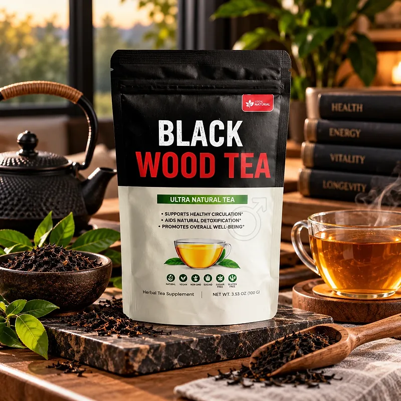
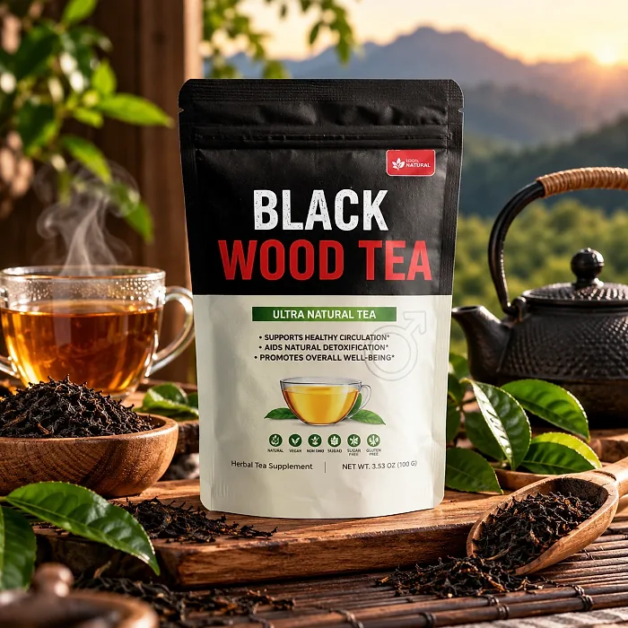

What Is Black Wood Tea And How Does It Work?
Black Wood Tea is an herbal tea supplement designed to support healthy circulation, natural energy, and men's vitality for men who want to address the lower energy, drive, and stamina that can build up with age, stress, and busy routines through a natural, simple approach — without pills or temporary quick fixes.
It combines Muira Puama, Catuaba, Guarana, Tribulus Terrestris, Tongkat Ali, Lemongrass, and Ginger Root in an easy daily tea, and the pouch describes it as an ultra natural tea that supports healthy circulation, aids natural detoxification, and promotes overall well-being.
The ingredients in Black Wood Tea are traditional botanicals from South America, Asia, and Africa that the official website describes as blended to support blood flow, libido, stamina, and a balanced response to stress, particularly for men who prefer a warm drink over capsules.
Rather than acting as a short-lived stimulant, Black Wood Tea focuses on supporting the body's own circulation and vitality, working gradually alongside daily routines, which is why the official refund policy recommends drinking it daily for at least two months.
With consistent daily use, a tea of this kind is intended to help with more energy, steadier drive, and greater confidence, especially when combined with regular exercise, a balanced diet, good sleep, and less alcohol.
From a practical standpoint, Black Wood Tea is a daily herbal tea — steep it in hot water and sip it through the day.
Manufactured in the USA in an FDA-registered facility that follows GMP guidelines, according to the official website, with batches checked by an independent third-party lab, and labeled natural, vegan, non-GMO, sugar-free, and gluten-free on the pouch, Black Wood Tea focuses on safety, purity, and quality.
Black Wood Tea Ingredients
The official website names the ingredients of Black Wood Tea one by one in its sales presentation. These are the main ones, chosen to support circulation, energy, and men's vitality:
Muira Puama: An Amazonian wood, known locally as "potency wood", traditionally used for male vitality and libido.
Catuaba: A Brazilian tree bark traditionally used to support desire and stamina.
Guarana Extract: A natural source of caffeine that supports energy and endurance.
Tribulus Terrestris Extract: A traditional herb used to support drive and performance.
Tongkat Ali: A Southeast Asian root traditionally used to support hormonal balance and masculine energy.
Lemongrass and Ginger Root: Aromatic plants that help with relaxation and support healthy circulation.
Together, these ingredients are designed to support blood flow, energy, and confidence. Other parts of the sales page also mention horny goat weed, Asian and Siberian ginseng, and beetroot. The official website does not publish the Supplement Facts panel with the full list and the amounts, so the pouch label is the reference to check.
Black Wood Tea is designed for daily use, offering a natural, non-prescription approach to supporting men's vitality.
Black Wood Tea Side Effects
Black Wood Tea is generally considered well tolerated and is designed for adult men of different ages and lifestyles who are looking for a natural, balanced approach to men's vitality, especially those who prefer a simple daily tea to support energy, drive, and circulation without resorting to risky solutions with severe side effects.
According to the official website, the tea is all natural, made in the USA in an FDA-registered facility following GMP guidelines, and tested by independent laboratories, reinforcing consistency, safety, and reliability.
With no widespread reports of serious side effects, Black Wood Tea is generally considered a well-tolerated option. A few points deserve attention: guarana contains caffeine, so several cups a day may cause jitters or trouble sleeping in sensitive people, especially in the evening; herbs that support blood flow and drive, such as horny goat weed and tribulus, may interact with medication for blood pressure, heart conditions, or men's health; and ginger may add to the effect of blood thinners. It is not intended to diagnose, treat, cure, or prevent any disease, and individual results may vary.
Men who take prescription medication or have a heart condition, high blood pressure, or another medical condition should consult a physician before drinking Black Wood Tea, ensuring it fits safely within their personal wellness plan. It is intended for adult men only.
Black Wood Tea Dosage
According to the official FAQ, the way to use Black Wood Tea is simple: steep a bag in hot water for a few minutes and enjoy it throughout the day. There are no pills to swallow and no complicated routines.
The refund policy adds a recommendation: drink it daily, without skipping days, especially in the first 14 days, and up to three cups a day. Because the tea contains guarana, it is wise to drink the cups in the morning and early afternoon rather than at night.
For best results, consistency is key. Each pouch holds 30 tea bags, sold as a one-month supply, and the official policy recommends drinking it daily for at least two months, which is why many men make it part of an ongoing routine.
There is no need for complex schedules. A simple daily tea is designed to build support gradually alongside regular exercise, a balanced diet, good sleep, and less alcohol.
As with any herbal supplement, it's important to follow the directions on the pouch and not overdo the number of cups. Black Wood Tea works best when used regularly, combined with proper hydration, balanced nutrition, and healthy daily habits.
Black Wood Tea – Refund Policy
You can order Black Wood Tea with confidence, knowing that every purchase is protected by a 60-day money-back guarantee. This allows you to try the tea and decide if it delivers the support you expect.
According to the refund policy on the official website, products can be returned within 60 days after purchase, and you must send back all the tea bags, even used or empty, because bags that are not received are not refunded. The customer pays the return shipping, and shipping and handling costs are deducted from the refund.
How the refund process works: Contact the support desk by email with your full name, email, and order details, then send the bags to ShipOffers, C/O Black Wood Tea, 19655 E 35th Drive, Suite 100, Aurora, CO 80011. Once the package is received, the refund is processed to your original payment method.
Customer Support Contact Information: support@tryblackwoodtea.com, as listed on the contact page of the official website, which also lists a mailing address in North Woodstock, New Hampshire; order questions go to BuyGoods at (302) 200-3480.
Refund Processing Time: The refund is processed after the return is received, and the time for the amount to appear depends on your bank.
This refund policy is designed to give customers a clear path when trying Black Wood Tea.
Black Wood Tea – Where To Buy
Black Wood Tea is sold through its official website, so if you decide to try it, it's important to be careful about where you purchase it. The official website is the only sales channel the manufacturer lists, and it does not point to marketplaces such as Amazon, eBay, or Walmart.
Listings on third-party platforms may look similar but cannot be verified as authentic, raising concerns about safety, quality, and ingredient freshness. Products purchased outside the official source may not be covered by the 60-day guarantee.
For this reason, it makes sense to purchase Black Wood Tea only through the official website. Buying directly from the official source ensures you receive the authentic original product, with access to customer support and the full guarantee. According to the official website, orders are one-time purchases, and they are processed by BuyGoods, the retailer named on the site.
To avoid counterfeit batches and ensure maximum quality, always verify that you are ordering from the official Black Wood Tea website before completing your purchase.
To ensure you’re getting the authentic product, most users choose to visit the official website.
Is Black Wood Tea A Scam?
Based on what the official website discloses, Black Wood Tea does not appear to be a scam. It is a real herbal tea, sold through an established retailer (BuyGoods), and formulated to support healthy circulation, energy, and men's vitality as part of a consistent routine.
The ingredients used in Black Wood Tea — Muira Puama, Catuaba, Guarana, Tribulus Terrestris, Tongkat Ali, Lemongrass, and Ginger Root — are traditional botanicals in men's wellness, and the official website describes each one in its presentation.
In addition to its formula, Black Wood Tea is made in the USA in an FDA-registered, GMP facility, according to the official website, with a support email, a mailing address, and a published return address, with a focus on clarity and simple returns.
The official website publishes no testimonials suitable for quoting, so this review does not quote any. A fair point of criticism is that the sales page is written as an explicit story with promises no supplement can guarantee, it does not publish the label or the amounts, it compares one herb to prescription drugs, and the refund policy deducts shipping and handling. Results vary from person to person, and no tea replaces a medical evaluation for persistent symptoms.
Black Wood Tea is backed by a 60-day money-back guarantee, and the return steps and the return address are published on the official website, which gives customers a clear path if the product does not meet their expectations.
If you're looking for a simple daily tea to support energy, drive, and confidence without pills, Black Wood Tea is worth considering — especially when purchased directly from the official website.
For those who want to verify product details or check current availability, the official Black Wood Tea website remains the safest option.

Check Availability On Official Website